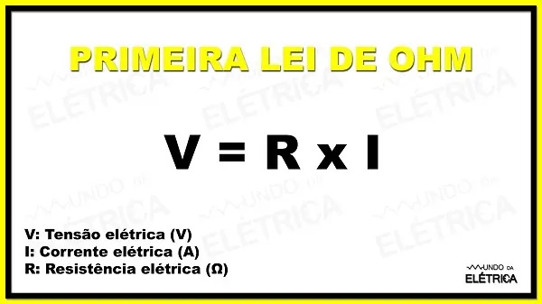
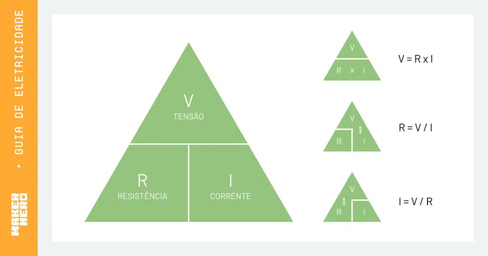
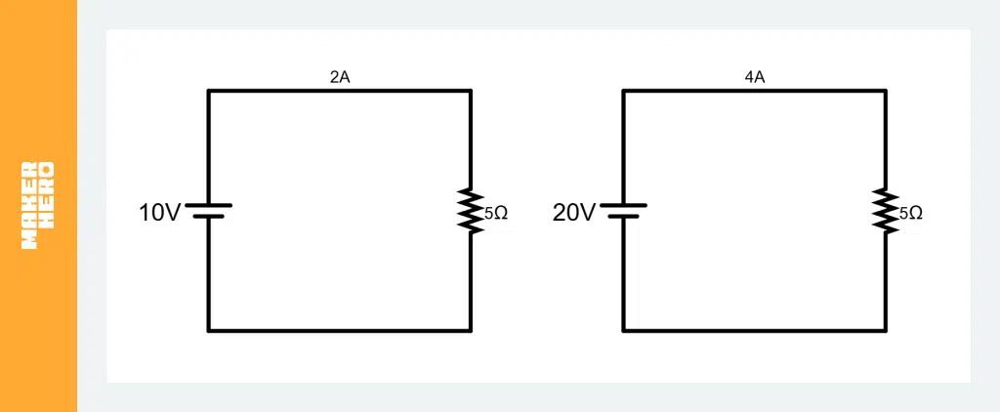
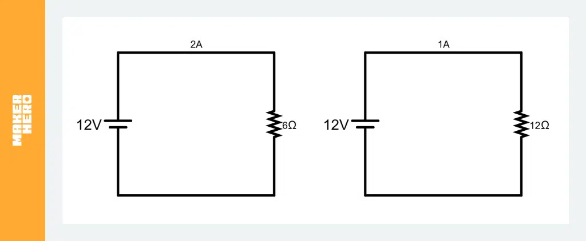
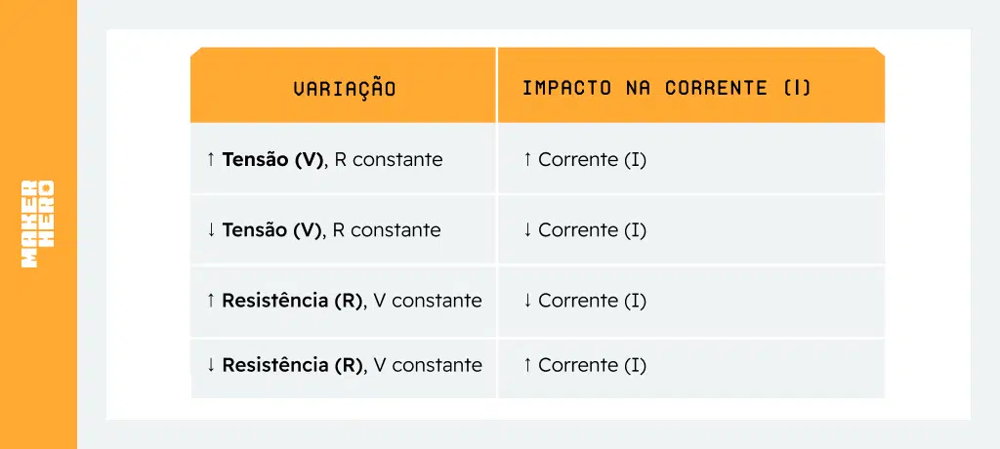

Atualmente, a Lei de Ohm é considerada uma das leis mais importantes sobre a eletricidade e é, sem dúvidas, a fórmula mais utilizada nos cálculos elétricos!
George Simon Ohm foi um físico e matemático, estudante da universidade de Erlangen, na Bavária. Ele realizou experiências para chegar ao conceito que temos hoje sobre a resistência e a resistividade elétrica!
Em 1827, Ohm formulou um enunciado que envolvia, além dessas grandezas, a diferença de potencial: “A intensidade da corrente elétrica que percorre um condutor é diretamente proporcional à diferença de potencial e inversamente proporcional à resistência do circuito”. Esse enunciado ficou conhecido como Lei de Ohm!
A Lei de Ohm estabelece as três principais grandezas elétricas e suas relações, sendo elas: tensão, corrente e resistência elétrica. Temos que:
-
V = Tensão elétrica, unidade Volt (V é a letra que representa a unidade)
-
I = Corrente elétrica, unidade Ampère (A é a letra que representa a unidade)
-
R = Resistência elétrica, unidade Ohm (Ω é a letra grega que representa a unidade)
Para formular esse enunciado, Ohm foi guiado na investigação por uma analogia com o movimento de fluidos em tubos!
Ele comparou a intensidade da corrente elétrica que se desloca através de um fio com o fluxo da água ao longo de um tubo, que vai de um depósito situado a uma altura superior até outro situado a uma altura inferior. A quantidade de água que flui pelo tubo por unidade de tempo, equivale à intensidade da corrente elétrica!
Em vez da diferença de alturas entre os níveis da água de um depósito para o outro, utiliza-se a diferença de potencial, aplicada às extremidades do condutor. A resistência à passagem do líquido no interior do tubo equivale à resistência elétrica do fio.
Com base nessas analogias, Ohm supôs que a intensidade da corrente elétrica é dada pelo quociente entre a diferença de potencial e a resistência elétrica do condutor. Na imagem abaixo, é possível ver a fórmula da primeira Lei de Ohm.
Figura 01: Fôrmula da primeira Lei de Ohn

Fonte: Mundo da elétrica
Para testar essa hipótese, Ohm mediu a corrente elétrica que percorria um condutor em função da diferença de potencial (d.d.p.) que se estabelecia entre os seus extremos. Os resultados que obteve confirmaram a sua suposição!
Ele estabeleceu, portanto, que a razão entre a diferença de potencial e a corrente elétrica num condutor é igual à resistência elétrica desse condutor!
Triângulo da Lei de Ohm
Para facilitar o uso da fórmula, muitas pessoas utilizam o triângulo da Lei de Ohm. Ele ajuda a lembrar como rearranjar a fórmula para calcular cada grandeza:
Figura 02: Triângulo da Lei de Ohm

Fonte: MakerHero
- Para calcular V, cubra o V no triângulo: V = I x R.
- Para calcular I, cubra o I: I = V / R.
- Para calcular R, cubra o R: R = V / I.
Relação entre tensão, corrente e resistência
A Lei de Ohm nos mostra que tensão elétrica (V), corrente elétrica (I) e resistência elétrica (R) estão diretamente relacionadas e influenciam o comportamento dos circuitos elétricos. Essa relação pode ser explicada da seguinte maneira:
- A tensão elétrica e a corrente são diretamente proporcionais: Se aumentarmos a tensão (V) em um circuito e mantivermos a resistência constante, a corrente elétrica também aumentará. Se reduzirmos a tensão, a corrente também diminuirá.
Exemplo: Se aplicamos 10V em um resistor de 5Ω, a corrente será 2A. Se aumentarmos a tensão para 20V, a corrente sobe para 4A.
Figura 03: Exemplo de circuito

Fonte: MakerHero
- A resistência elétrica e a corrente são inversamente proporcionais: Se aumentarmos a resistência (R) de um circuito e mantivermos a tensão constante, a corrente diminuirá. Se reduzirmos a resistência, a corrente aumentará.
Exemplo: Se temos uma tensão de 12V e um resistor de 6Ω, a corrente será 2A. Se aumentarmos a resistência para 12Ω, a corrente cai para 1A.
Figura 04: Exemplo de circuito

Fonte: MakerHero
Resumo da relação entre as grandezas
Figura 05: Relação entre as grandezas

Fonte: MakerHero
Essa relação é fundamental para o dimensionamento de componentes elétricos e para entender como funcionam dispositivos como resistores, fusíveis e até mesmo equipamentos eletrônicos mais complexos.
Aplicações da Lei de Ohm
A Lei de Ohm é amplamente utilizada na eletricidade e na eletrônica para entender e projetar circuitos elétricos. Vamos explorar algumas aplicações práticas dessa lei no dia a dia e na indústria.
Exemplo 01: Um LED geralmente opera com 2V e 20mA (0,02A). Se usarmos uma fonte de 9V, precisamos de um resistor para limitar a corrente. Aplicando a fórmula da Lei de Ohm:
Figura 06: Exemplo de aplicação da lei de ohn
Fonte: MakerHero
Assim, um resistor de 350Ω deve ser usado para proteger o LED.
Exemplo 02: Se um fio possui resistência de 2Ω e conduz uma corrente de 10A, a queda de tensão ao longo do fio será:
Figura 07: Exemplo de aplicação da lei de ohn
Fonte: MakerHero
Se a tensão da rede for 127V, essa queda pode ser significativa, exigindo um fio com menor resistência.
Tabela com valores de tensão, corrente e resistência
| Tensão (V) |
Corrente (A) |
Resistência (Ω) |
| 10 |
2 |
5 |
| 20 |
4 |
5 |
| 30 |
6 |
5 |
| 10 |
1 |
10 |
| 20 |
2 |
10 |
| 30 |
3 |
10 |
| 10 |
0,5 |
20 |
| 20 |
1 |
20 |
| 30 |
1,5 |
20 |
A tabela segue a lei de ohn, que estabelece que a tensão (V) é igual à corrente (I) multiplicada pela resistência (R): V = I * R
Exemplo: Alteração nos valores de tensão, corrente e resitência e como afetam a equação.
| Alteração |
Tensão (V) |
Corrente (A) |
Resistência (Ω) |
| Inicial |
10V |
2A |
5Ω |
| Aumenta tensão |
15V |
2A |
5Ω |
| Aumenta corrente |
15V |
3A |
5Ω |
| Aumenta resistência |
15V |
3A |
10Ω |
| Diminui tensão |
10V |
3A |
10Ω |
| Diminui corrente |
10V |
2A |
10Ω |
| Diminui resistência |
10V |
2A |
5Ω |
- As células em negrito indicam os valores que foram alterados em cada linha.
- A equação V = I x R é mantida constante, mas os valores de V, I e R são atualizados de acordo com as alterações.